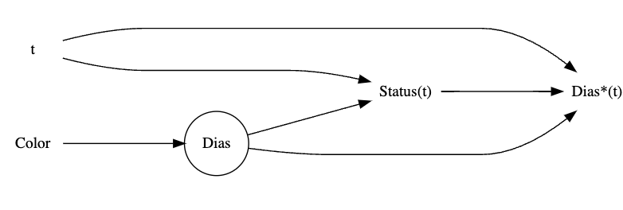

Rows: 22,356
Columns: 9
$ id <fct> A730601, A679549, A683656, A709749, A733551, A756485, A7…
$ days_to_event <int> 1, 25, 4, 41, 9, 4, 4, 5, 24, 2, 34, 27, 3, 151, 106, 4,…
$ date_out <fct> 07/08/2016 09:00:00 AM, 06/16/2014 01:54:00 PM, 07/17/20…
$ out_event <fct> Transfer, Transfer, Adoption, Transfer, Transfer, Adopti…
$ date_in <fct> 07/07/2016 12:11:00 PM, 05/22/2014 03:43:00 PM, 07/13/20…
$ in_event <fct> Stray, Stray, Stray, Stray, Stray, Stray, Stray, Owner S…
$ breed <fct> Domestic Shorthair Mix, Domestic Shorthair Mix, Snowshoe…
$ color <fct> Blue Tabby, Black/White, Lynx Point, Calico, Brown Tabby…
$ intake_age <int> 7, 1, 2, 12, 1, 1, 2, 24, 1, 3, 4, 12, 1, 7, 0, 12, 1, 1…Adopciones de Gatos - Análisis de Supervivencia
Proyecto Final
Introducción
El presente análisis se basa en el libro Statistical Rethinking de Richard McElreath (segunda edición), el cual introduce los modelos de supervivencia como herramientas adecuadas para estudiar eventos contables en el tiempo, especialmente cuando el resultado de interés es la duración hasta que ocurre un evento. Estos modelos son particularmente útiles en contextos donde algunas observaciones están censadas, es decir, no se ha observado aún el evento de interés, pero se tiene información parcial sobre el tiempo de espera.
El objetivo de este estudio es evaluar si el color del gato influye en el tiempo que tarda en ser adoptado desde su ingreso a un albergue. Esta pregunta se enmarca dentro de un modelo de supervivencia con tiempos de espera que se modelan mediante una distribución exponencial, y que considera adecuadamente los casos censados (gatos que no fueron adoptados durante el periodo de observación).
Para ello, se emplea el conjunto de datos AustinCats, incluido en el paquete rethinking, que contiene información detallada sobre más de 22,000 gatos atendidos en un refugio animal. A continuación, se presenta una descripción general de la estructura del conjunto de datos:
Tratamiento de variables
Se creó una variable binaria color_group que clasifica a los gatos como “Negro” si su color es exactamente negro, y “Otro” en cualquier otro caso. A partir de esta variable, se calculó la proporción de cada grupo: 13.3% de los gatos son negros y 86.7% de otro color. La gráfica de barras resultante ilustra estas proporciones, destacando visualmente la menor representación de gatos negros en el refugio.

Siguiendo el tratamiento propuesto por McElreath, se transformó la variable out_event en dos indicadores binarios: adopted, que toma el valor 1 si el gato fue adoptado, y censored, que toma el valor 0 si el evento fue distinto a adopción. Este enfoque permite distinguir entre observaciones completas y censuradas, lo cual es fundamental en modelos de supervivencia.

En este caso, el 50.8% de los gatos fueron adoptados, mientras que el 49.2% fueron censurados. Estos últimos incluyen tanto a los gatos que permanecen en el refugio como a aquellos que salieron por otras razones. Esta proporción cercana al 50% resalta la importancia de incorporar adecuadamente la censura por la derecha para evitar sesgos en la estimación de los tiempos de espera hasta la adopción.
Modelo Generativo
DAG

Descripción del modelo:
La variable Dias representa el tiempo real que tarda un gato en ser adoptado, pero en muchos casos no se observa completamente debido al límite de observación impuesto por el tiempo t.
Lo que efectivamente se observa en los datos es Dias*(t), una versión truncada de Dias, determinada por si el gato fue adoptado antes o después del tiempo t.
El estado de adopción observado (Status(t)) también depende tanto de Dias como de t, ya que un gato será clasificado como adoptado si Dias < t, y como no adoptado en caso contrario.
El color del gato podría influir directamente en el tiempo real de adopción (Dias), por lo que en un escenario ideal (con toda la historia observada), bastaría con analizar la relación \(Color \rightarrow Dias\) para estimar ese efecto. sin embargo, como no se observa completamente Dias, una regresión directa de Color sobre Dias*(t) puede inducir sesgos, ya que Dias*(t) no refleja exactamente el tiempo de adopción sino un valor censurado.
Aun así, si modelamos adecuadamente el mecanismo de censura y observación (es decir, cómo Dias y t determinan Dias*(t) y Status(t)), es posible estimar correctamente el efecto causal de Color sobre Dias.
Modelo de adopción bajo censura
Para estudiar el tiempo hasta la adopción de gatos en un refugio, se modela este evento como un tiempo de espera continuo que sigue una distribución exponencial, de la siguiente forma: \[D_i \sim \text{Exponencial}(\lambda_i)\] donde:
\(D_i\): tiempo hasta la adopción (o censura) del gato \(i\),
\(\lambda_i = \frac{1}{\mu_i}\): tasa de adopción, inversa del tiempo medio.
El tiempo medio de adopción \(\mu_i\) depende del grupo de color al que pertenece el gato. Se modela como: \[log(\mu_i) = \alpha_{c[i]}\]
donde \(\alpha_1\) es el parámetro para gatos negros y \(\alpha_2\) para gatos de otro color. Esto permite capturar diferencias sistemáticas en la velocidad de adopción asociadas al color, mediante un modelo log-lineal.
En este contexto, no todos los gatos son adoptados durante el periodo de observación, por lo que introducimos la posibilidad de censura. A cada gato se le asigna aleatoriamente un estatus de censura con probabilidad \(p_{censored}\). En los casos censados, no se observa si el gato fue adoptado, sino solo que no lo fue hasta el corte de observación.
Además, para los casos censados, la probabilidad de que el evento (adopción) ocurriera después del tiempo observado puede expresarse como la cola de la distribución exponencial: \[Pr(D_i>d_i | \lambda_i) = exp(-\lambda_id_i)\]
Esta expresión es clave para realizar inferencias en presencia de censura.
Simulación
La siguiente función implementa este modelo generando un conjunto sintético de datos de adopción bajo los supuestos descritos:
sim_cats <- function(N = 1000, alpha_black = log(70), alpha_other = log(50),
p_black = 0.15, p_censored = 0.5) {
color_id <- rbinom(N, 1, p_black) + 1
alpha <- c(alpha_black, alpha_other)
mu <- exp(alpha[color_id])
lambda <- 1 / mu
time_true <- rexp(N, rate = lambda)
censored <- rbinom(N, 1, p_censored)
adoptado <- 1L - censored
days_to_adoption <- time_true
tibble(
color_id = factor(color_id, labels = c("Negro", "Otro")),
mu = mu,
lambda = lambda,
days_to_adoption = days_to_adoption,
adoptado = adoptado,
censored = censored
)
}Usamos las curvas de Kaplan-Meier para estimar la probabilidad de que un gato siga sin ser adoptado a lo largo del tiempo, incluso cuando algunos casos están censados (es decir, no sabemos si fueron adoptados después del periodo observado). Esta herramienta permite comparar visualmente la duración hasta la adopción entre grupos, como gatos negros y de otros colores, reflejando posibles diferencias en sus tasas de adopción. Generamos 10 simulaciones y graficamos Kaplan-Meier
Warning: Removed 59 rows containing missing values or values outside the scale range
(`geom_step()`).
Las 10 replicaciones muestran de forma consistente que los gatos negros tienden a permanecer más tiempo sin ser adoptados en comparación con los de otros colores. Aunque hay variabilidad entre simulaciones, la mayoría de las curvas para gatos negros se ubican por encima, indicando una mayor probabilidad de seguir sin adoptar en cada punto del tiempo.
Modelo STAN
Al incorporar esta información de censura en el modelo, se aprovecha mejor la evidencia disponible y se evitan sesgos en la estimación del tiempo medio de adopción por color. La inferencia se realiza bajo un enfoque bayesiano utilizando Stan.
# Modelo Stan que considera censura
stan_code_cens <- "
data {
int<lower=1> N;
real<lower=0> days[N];
int<lower=1,upper=2> color[N];
int<lower=0,upper=1> adopted[N];
}
parameters {
vector[2] alpha;
}
model {
for (i in 1:N) {
real lambda = exp(-alpha[color[i]]);
if (adopted[i] == 1)
target += exponential_lpdf(days[i] | lambda);
else
target += exponential_lccdf(days[i] | lambda);
}
}
"Running /Library/Frameworks/R.framework/Resources/bin/R CMD SHLIB foo.c
using C compiler: ‘Apple clang version 17.0.0 (clang-1700.0.13.3)’
using SDK: ‘MacOSX15.4.sdk’
clang -arch arm64 -I"/Library/Frameworks/R.framework/Resources/include" -DNDEBUG -I"/Users/shang/Library/Caches/org.R-project.R/R/renv/cache/v5/macos/R-4.4/aarch64-apple-darwin20/Rcpp/1.0.14/e7bdd9ee90e96921ca8a0f1972d66682/Rcpp/include/" -I"/Users/shang/Documents/ITAM/metodos_analiticos/metodos-analiticos-mcd-2025/renv/library/macos/R-4.4/aarch64-apple-darwin20/RcppEigen/include/" -I"/Users/shang/Documents/ITAM/metodos_analiticos/metodos-analiticos-mcd-2025/renv/library/macos/R-4.4/aarch64-apple-darwin20/RcppEigen/include/unsupported" -I"/Users/shang/Documents/ITAM/metodos_analiticos/metodos-analiticos-mcd-2025/renv/library/macos/R-4.4/aarch64-apple-darwin20/BH/include" -I"/Users/shang/Library/Caches/org.R-project.R/R/renv/cache/v5/macos/R-4.4/aarch64-apple-darwin20/StanHeaders/2.32.10/c35dc5b81d7ffb1018aa090dff364ecb/StanHeaders/include/src/" -I"/Users/shang/Library/Caches/org.R-project.R/R/renv/cache/v5/macos/R-4.4/aarch64-apple-darwin20/StanHeaders/2.32.10/c35dc5b81d7ffb1018aa090dff364ecb/StanHeaders/include/" -I"/Users/shang/Library/Caches/org.R-project.R/R/renv/cache/v5/macos/R-4.4/aarch64-apple-darwin20/RcppParallel/5.1.10/34ee3ba92c1b2df651980325523ed22a/RcppParallel/include/" -I"/Users/shang/Library/Caches/org.R-project.R/R/renv/cache/v5/macos/R-4.4/aarch64-apple-darwin20/rstan/2.32.7/5f47b80f0db40503697eef138a31a6ef/rstan/include" -DEIGEN_NO_DEBUG -DBOOST_DISABLE_ASSERTS -DBOOST_PENDING_INTEGER_LOG2_HPP -DSTAN_THREADS -DUSE_STANC3 -DSTRICT_R_HEADERS -DBOOST_PHOENIX_NO_VARIADIC_EXPRESSION -D_HAS_AUTO_PTR_ETC=0 -include '/Users/shang/Library/Caches/org.R-project.R/R/renv/cache/v5/macos/R-4.4/aarch64-apple-darwin20/StanHeaders/2.32.10/c35dc5b81d7ffb1018aa090dff364ecb/StanHeaders/include/stan/math/prim/fun/Eigen.hpp' -D_REENTRANT -DRCPP_PARALLEL_USE_TBB=1 -I/opt/R/arm64/include -fPIC -falign-functions=64 -Wall -g -O2 -c foo.c -o foo.o
In file included from <built-in>:1:
In file included from /Users/shang/Library/Caches/org.R-project.R/R/renv/cache/v5/macos/R-4.4/aarch64-apple-darwin20/StanHeaders/2.32.10/c35dc5b81d7ffb1018aa090dff364ecb/StanHeaders/include/stan/math/prim/fun/Eigen.hpp:22:
In file included from /Users/shang/Documents/ITAM/metodos_analiticos/metodos-analiticos-mcd-2025/renv/library/macos/R-4.4/aarch64-apple-darwin20/RcppEigen/include/Eigen/Dense:1:
In file included from /Users/shang/Documents/ITAM/metodos_analiticos/metodos-analiticos-mcd-2025/renv/library/macos/R-4.4/aarch64-apple-darwin20/RcppEigen/include/Eigen/Core:19:
/Users/shang/Documents/ITAM/metodos_analiticos/metodos-analiticos-mcd-2025/renv/library/macos/R-4.4/aarch64-apple-darwin20/RcppEigen/include/Eigen/src/Core/util/Macros.h:679:10: fatal error: 'cmath' file not found
679 | #include <cmath>
| ^~~~~~~
1 error generated.
make: *** [foo.o] Error 1Una vez finalizada la estimación del modelo, se realizaron diagnósticos de convergencia para evaluar la estabilidad y confiabilidad de las cadenas de muestreo.
Inference for Stan model: anon_model.
4 chains, each with iter=2000; warmup=1000; thin=1;
post-warmup draws per chain=1000, total post-warmup draws=4000.
mean se_mean sd 2.5% 50% 97.5% n_eff Rhat
alpha[1] 4.05 0 0.03 4.00 4.05 4.1 3631 1
alpha[2] 3.88 0 0.01 3.86 3.88 3.9 4429 1
Samples were drawn using NUTS(diag_e) at Mon May 19 21:56:52 2025.
For each parameter, n_eff is a crude measure of effective sample size,
and Rhat is the potential scale reduction factor on split chains (at
convergence, Rhat=1).
Las cadenas de Markov para los parámetros \(\alpha_1\) y \(\alpha_2\), asociadas a los grupos de color del gato (negro y otro, respectivamente), muestran una buena mezcla y estabilidad a lo largo de las iteraciones, sin tendencias evidentes ni divergencias entre cadenas. Esto, junto con valores de \(\hat{R}\) cercanos a 1 y tamaños efectivos adecuados, sugiere que el muestreo posterior ha convergido correctamente.
Por lo tanto seguimos con la vizualición de las distribuciones posteriores para los dias de adopcion:

la distribución posterior de los tiempos medios de adopción (\(\mu=exp(\alpha)\)) para cada grupo. Se observa que los gatos de color negro tienen, en promedio, un mayor tiempo estimado de adopción en comparación con los gatos de otro color. Esta diferencia es clara y consistente en las distribuciones posteriores, lo que respalda la hipótesis de que el color del gato influye en el tiempo que tarda en ser adoptado. El modelo, al incorporar adecuadamente la censura, permite recuperar esta relación de forma robusta a partir de los datos observados.
Ajuste controlando la variable edad
Para estimar de forma más realista el efecto del color del gato sobre el tiempo de adopción, se construyó un modelo de supervivencia exponencial que controla por la edad al ingreso y además considera la censura a la derecha. Esto permite diferenciar entre gatos que fueron efectivamente adoptados y aquellos que no lo fueron durante el periodo de observación.
Se asume que el tiempo hasta la adopción sigue una distribución exponencial con una tasa específica para cada gato. Esta tasa depende del color del pelaje y la edad al ingreso. En los casos en que el evento no se observa (censura), se modela la probabilidad de no adopción hasta el día observado usando la función de supervivencia de la distribución exponencial.
Este enfoque permite estimar con mayor precisión el efecto del color, aislando posibles confusiones derivadas de diferencias sistemáticas en edad entre grupos. Así se evita atribuir al color lo que en realidad podría ser efecto de la edad.
El modelo en STAN quedaría de la siguiente manera:
# Modelo Stan con censura (usando funciones ya incluidas en Stan)
stan_model_code <- "
data {
int<lower=1> N;
real<lower=0> days[N];
int<lower=1,upper=2> color[N];
real age[N];
int<lower=0,upper=1> adopted[N];
}
parameters {
vector[2] alpha;
real beta_age;
}
model {
for (i in 1:N) {
real mu = exp(alpha[color[i]] + beta_age * age[i]);
real lambda = 1 / mu;
if (adopted[i] == 1)
target += exponential_lpdf(days[i] | lambda);
else
target += exponential_lccdf(days[i] | lambda);
}
}
"Running /Library/Frameworks/R.framework/Resources/bin/R CMD SHLIB foo.c
using C compiler: ‘Apple clang version 17.0.0 (clang-1700.0.13.3)’
using SDK: ‘MacOSX15.4.sdk’
clang -arch arm64 -I"/Library/Frameworks/R.framework/Resources/include" -DNDEBUG -I"/Users/shang/Library/Caches/org.R-project.R/R/renv/cache/v5/macos/R-4.4/aarch64-apple-darwin20/Rcpp/1.0.14/e7bdd9ee90e96921ca8a0f1972d66682/Rcpp/include/" -I"/Users/shang/Documents/ITAM/metodos_analiticos/metodos-analiticos-mcd-2025/renv/library/macos/R-4.4/aarch64-apple-darwin20/RcppEigen/include/" -I"/Users/shang/Documents/ITAM/metodos_analiticos/metodos-analiticos-mcd-2025/renv/library/macos/R-4.4/aarch64-apple-darwin20/RcppEigen/include/unsupported" -I"/Users/shang/Documents/ITAM/metodos_analiticos/metodos-analiticos-mcd-2025/renv/library/macos/R-4.4/aarch64-apple-darwin20/BH/include" -I"/Users/shang/Library/Caches/org.R-project.R/R/renv/cache/v5/macos/R-4.4/aarch64-apple-darwin20/StanHeaders/2.32.10/c35dc5b81d7ffb1018aa090dff364ecb/StanHeaders/include/src/" -I"/Users/shang/Library/Caches/org.R-project.R/R/renv/cache/v5/macos/R-4.4/aarch64-apple-darwin20/StanHeaders/2.32.10/c35dc5b81d7ffb1018aa090dff364ecb/StanHeaders/include/" -I"/Users/shang/Library/Caches/org.R-project.R/R/renv/cache/v5/macos/R-4.4/aarch64-apple-darwin20/RcppParallel/5.1.10/34ee3ba92c1b2df651980325523ed22a/RcppParallel/include/" -I"/Users/shang/Library/Caches/org.R-project.R/R/renv/cache/v5/macos/R-4.4/aarch64-apple-darwin20/rstan/2.32.7/5f47b80f0db40503697eef138a31a6ef/rstan/include" -DEIGEN_NO_DEBUG -DBOOST_DISABLE_ASSERTS -DBOOST_PENDING_INTEGER_LOG2_HPP -DSTAN_THREADS -DUSE_STANC3 -DSTRICT_R_HEADERS -DBOOST_PHOENIX_NO_VARIADIC_EXPRESSION -D_HAS_AUTO_PTR_ETC=0 -include '/Users/shang/Library/Caches/org.R-project.R/R/renv/cache/v5/macos/R-4.4/aarch64-apple-darwin20/StanHeaders/2.32.10/c35dc5b81d7ffb1018aa090dff364ecb/StanHeaders/include/stan/math/prim/fun/Eigen.hpp' -D_REENTRANT -DRCPP_PARALLEL_USE_TBB=1 -I/opt/R/arm64/include -fPIC -falign-functions=64 -Wall -g -O2 -c foo.c -o foo.o
In file included from <built-in>:1:
In file included from /Users/shang/Library/Caches/org.R-project.R/R/renv/cache/v5/macos/R-4.4/aarch64-apple-darwin20/StanHeaders/2.32.10/c35dc5b81d7ffb1018aa090dff364ecb/StanHeaders/include/stan/math/prim/fun/Eigen.hpp:22:
In file included from /Users/shang/Documents/ITAM/metodos_analiticos/metodos-analiticos-mcd-2025/renv/library/macos/R-4.4/aarch64-apple-darwin20/RcppEigen/include/Eigen/Dense:1:
In file included from /Users/shang/Documents/ITAM/metodos_analiticos/metodos-analiticos-mcd-2025/renv/library/macos/R-4.4/aarch64-apple-darwin20/RcppEigen/include/Eigen/Core:19:
/Users/shang/Documents/ITAM/metodos_analiticos/metodos-analiticos-mcd-2025/renv/library/macos/R-4.4/aarch64-apple-darwin20/RcppEigen/include/Eigen/src/Core/util/Macros.h:679:10: fatal error: 'cmath' file not found
679 | #include <cmath>
| ^~~~~~~
1 error generated.
make: *** [foo.o] Error 1Una vez finalizada la estimación del modelo, se realizaron diagnósticos de convergencia para evaluar la estabilidad y confiabilidad de las cadenas de muestreo.
Inference for Stan model: anon_model.
4 chains, each with iter=2000; warmup=1000; thin=1;
post-warmup draws per chain=1000, total post-warmup draws=4000.
mean se_mean sd 2.5% 50% 97.5% n_eff Rhat
alpha[1] 4.08 0 0.03 4.03 4.08 4.13 3593 1
alpha[2] 3.87 0 0.01 3.85 3.87 3.89 3508 1
beta_age 0.23 0 0.01 0.21 0.23 0.25 3855 1
Samples were drawn using NUTS(diag_e) at Mon May 19 21:57:25 2025.
For each parameter, n_eff is a crude measure of effective sample size,
and Rhat is the potential scale reduction factor on split chains (at
convergence, Rhat=1).
Al igual que en el modelo inicial, la inclusión de la edad como covariable no afectó negativamente la convergencia. Las trazas de las cadenas y los valores de \(\hat{R}\) cercanos a 1 indican que no hubo problemas en la estimación posterior.
Con estos resultados vemos que los gatos negros tienden a tardar más en ser adoptados, lo cual respalda la hipótesis de que el color podría influir en las decisiones de adopción, aunque no necesariamente sea el único factor causal
# Evaluación a edad promedio
mean_age <- mean(cats$age_std, na.rm = TRUE)
mu_negro <- exp(post$`alpha[1]` + post$beta_age * mean_age)
mu_otro <- exp(post$`alpha[2]` + post$beta_age * mean_age)
posterior_mu_edad <- tibble(
mu_negro = mu_negro,
mu_otro = mu_otro
) |>
pivot_longer(cols = everything(), names_to = "Color", values_to = "mu") |>
mutate(Color = recode(Color,
"mu_negro" = "Negro",
"mu_otro" = "Otro"))
ggplot(posterior_mu_edad, aes(x = mu, fill = Color)) +
geom_density(alpha = 0.6) +
scale_fill_manual(values = c("Negro" = "black", "Otro" = "gray70")) +
labs(title = "Distribución posterior del tiempo medio de adopción (ajustado por edad)",
x = "Tiempo medio estimado (mu)",
y = "Densidad",
fill = "Color del gato") +
theme_minimal()
Esta distribución posterior muestra los tiempos medios estimados de adopción para gatos negros y de otros colores, ajustando por edad al ingreso. Al incorporar la edad como covariable, se controla por posibles diferencias sistemáticas en la edad entre grupos. Aun así, los gatos negros presentan un mayor tiempo medio de espera, lo que sugiere que el color sigue teniendo un efecto importante en la adopción, incluso cuando se consideran diferencias en edad. Esto refuerza la hipótesis de que existen factores adicionales, como sesgos perceptuales, que podrían influir en las decisiones de adopción.
Conclusiones
El modelo que incorpora censura permite utilizar toda la información disponible, incluyendo la de aquellos gatos que no fueron adoptados durante el periodo de observación. Esto resulta fundamental, ya que los datos censurados también contienen evidencia útil sobre el proceso de adopción. En consecuencia, una regresión lineal simple sobre los días observados sin considerar la censura sería inapropiada y potencialmente sesgada, pues ignoraría parte importante de la estructura de los datos.
Los resultados obtenidos muestran de forma consistente que los gatos negros tienden a permanecer más tiempo en espera de adopción en comparación con los gatos de otros colores. Esta diferencia se mantiene tanto en el modelo básico como en la versión extendida que controla por edad. La inclusión de la edad como covariable mejora la precisión de las estimaciones y reduce el riesgo de atribuir al color del gato efectos que en realidad podrían explicarse por diferencias etarias.